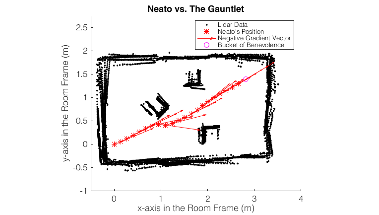

Roboptimization
For my Quantitative Engineering Analysis calss, in groups of two, I did three mini projects, that focused on programming a Neato robot, to do follow a prescribed path, go up a hill using gradient ascent and going through an obstacle course to a designated destination.

Bridge of Death
Using MATLAB's ROS package, we programmed a Neato to follow a parametric curve, in this particular case, a cardioid. We found that a robot's motion - that has two independtly driven wheels - can be defined the instantenous center of curvature.Since the shape of the cardioid and its equation was known, we calculated the curvature of the curve at discreet time steps and defined the wheel velocities depending on the maximum speeds they could drive at without slipping. This allowed us to follow any continuous function, like a cardioid, as shown below:
Mount Doom
We used the data from the accelerometers in Neatos to perform gradient ascent. This allowed us to determine the gradient of the surface that the Neato is sitting on, and allowed us to turn the Neato until it faced the gradient and move in discrete steps, until the gradient changes in a significant manner.By tuning the step sizes and the tolerance for gradient difference, we managed to make the Neato climb up to the peak of the mountain.
The Gauntlet
We wrote an obstacle detection algorithm that took the Neato to a desired location, without running into any of the obstacles.Using the data from our robot's LIDAR scans, we mapped the surroundings of the Neato, both in Neato's and in the room reference frame. By using a writing a RANSAC algorithm in MATLAB, we determined the obstacles around the Neato. By treating all the obstacles as high potential lines and the target as a low potential point, we routed the Neato with gradient descent to the target succcesfully.
- Design: HTML5 UP